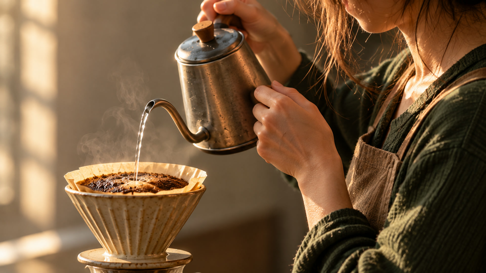

O ritual começa
Tudo começa
com um fio d’água.
O primeiro aroma já pede calma.

Café coado, feito com calma
Café coado com cuidado, servido no seu tempo.
Ver o cardápioO ritual começa
O primeiro aroma já pede calma.
A água passa aos poucos. O aroma chega primeiro. Por alguns minutos, a mesa é só sua.
Conheça o nosso jeitoUMA PAUSA DE TRÊS SEGUNDOS
A água passa. O aroma fica. Experimente uma pequena pausa antes do próximo gole.
Três segundos. Sem pressa.
A pausa também faz parte do café.
PLANEJE SUA VISITA
Preencha este espaço com o endereço, os horários e o contato reais da cafeteria.
ANTES DE VIR
Os nomes, ingredientes e valores reais ainda precisam ser preenchidos. Os cartões desta página são exemplos editáveis.
Confirme com a equipe quais bebidas podem ser feitas sem leite e quais alternativas estão disponíveis.
Adicione o endereço completo e a cidade nesta seção antes de compartilhar o site.
Inclua aqui o canal oficial de pedidos e os prazos depois de confirmar como a casa atende.
UM BOM CAFÉ ENCONTRA O SEU TEMPO
Os dados reais da cafeteria entram aqui quando você os definir.